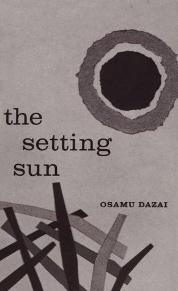
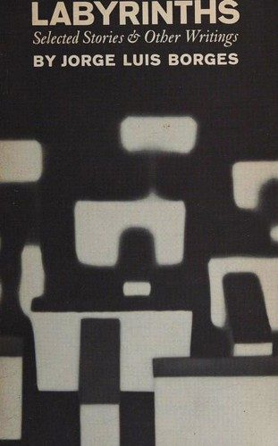
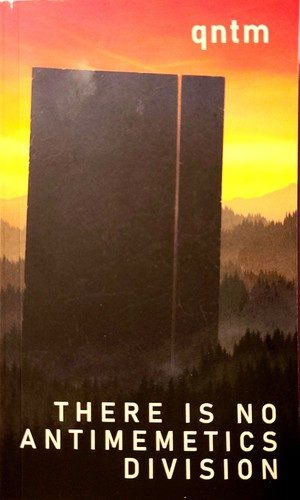
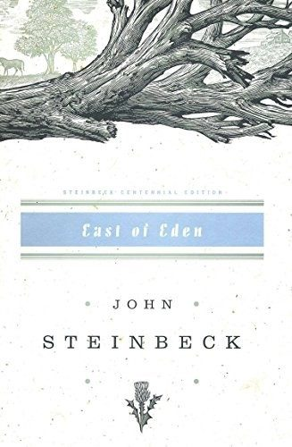
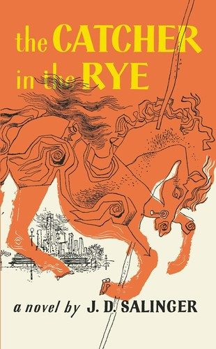

I'm Shayan. I recently finished my master's in NLP at Université de Lorraine, where I wrote my thesis at LORIA with Joël Legrand and Camille Teruel on how language models resolve conflicts between the documentation they're given and what they've memorised.
I'm interested in evaluation and interpretability, and in making both reliable enough to trust as AI systems become more capable. Before research, I spent two years as a software engineer building LLM products.




